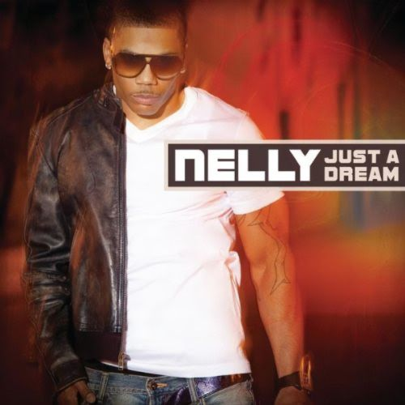
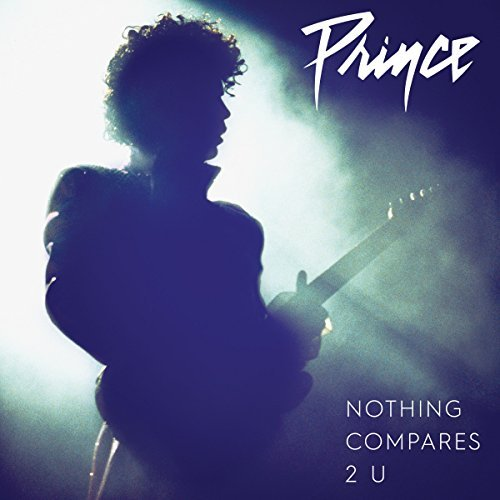
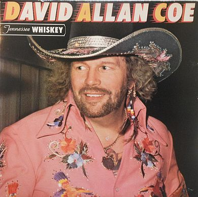
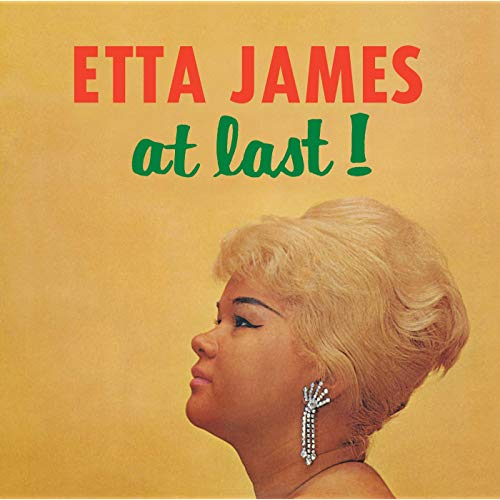
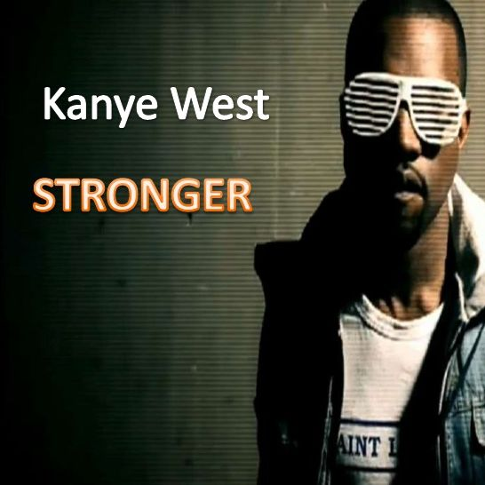
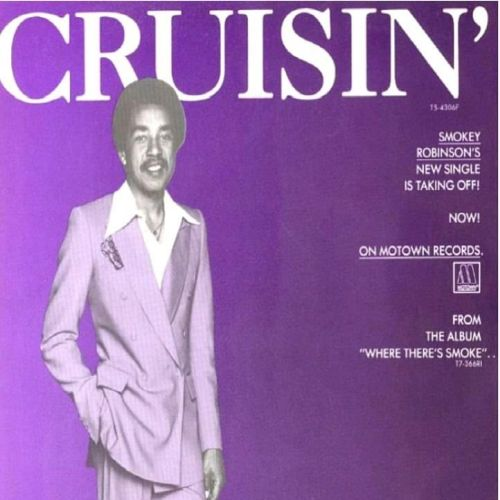
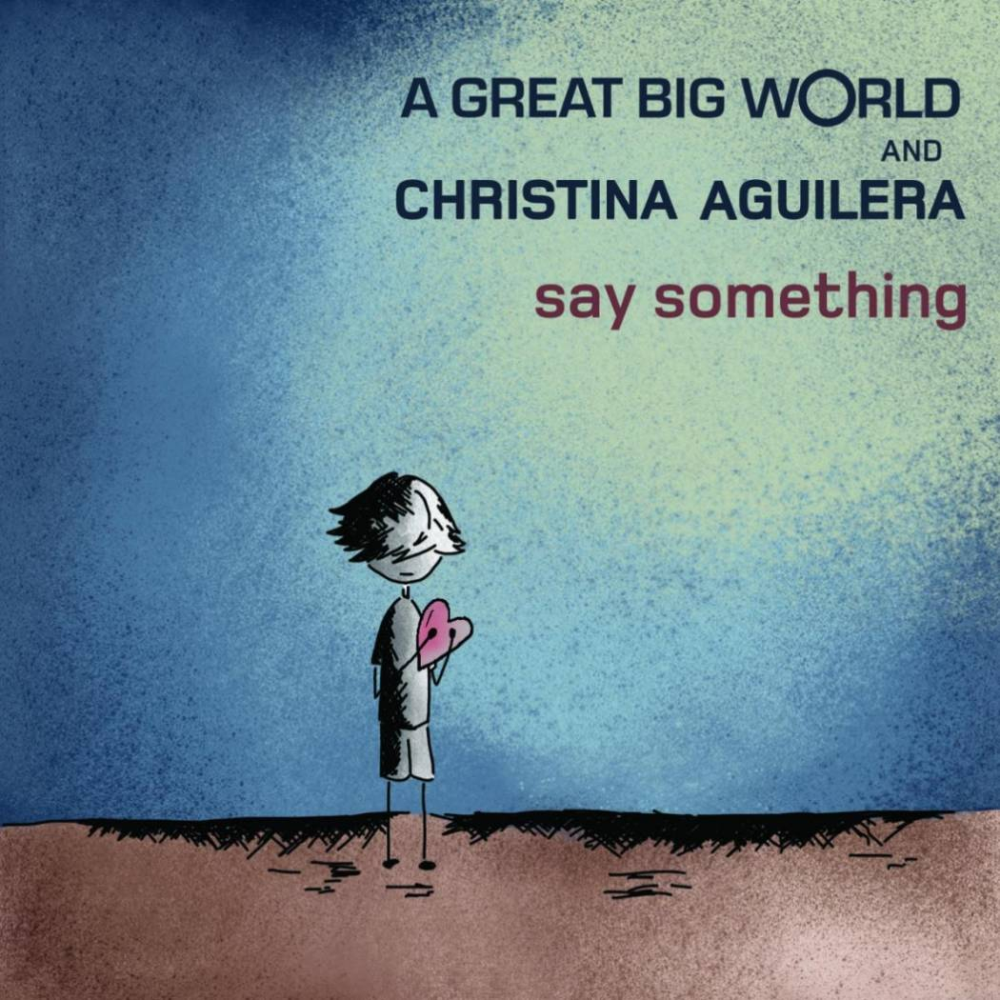
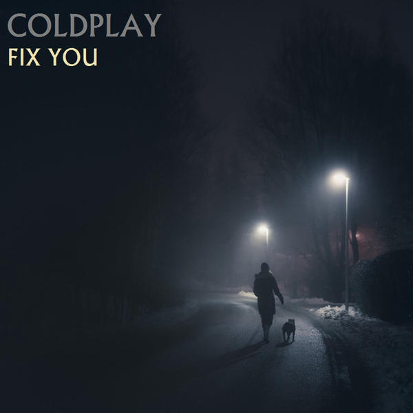
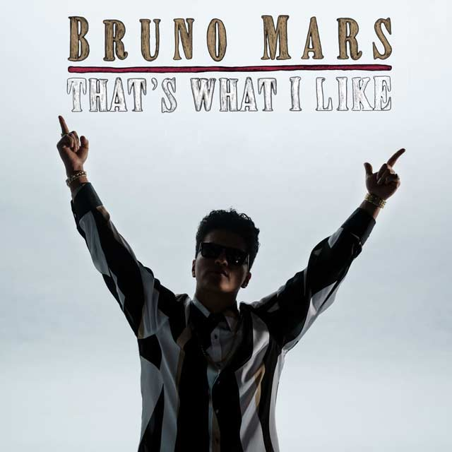

JUST A DREAM |
||
|---|---|---|
|  | Cover Artist: | Sherine |
| Original Artist: | Nelly | |
| Youtube Link: | [ Just a Dream Cover ] | |
| Why I like this song: | Before I even knew or heard that Nelly was the original artists, I came across the Cover by Jason Chen and Joseph Vincent. I truly love their version of the cover and was my original cover choice but, I came across the cover with the Egyptian Singer Sherine and love it as well and a bonus, it's done in 2 languages. | |
NOTHING COMPARES TO YOU |
||
|---|---|---|
|  | Cover Artist: | Sinead O'Connor |
| Original Artist: | Prince | |
| Youtube Link: | [ Nothing Compares To You Cover ] | |
| Why I like this song: | I also, thought that this cover's singer, Sinead O'Connor was the original singer of this song until I was searching for the lyrics and discovered it was orginally song by Prince! How amazing, I love so many of Prince songs and didn't this. RIHP PRINCE! | |
TENNESSEE WHISKEY |
||
|---|---|---|
|  | Cover Artist: | Chris Stapleton |
| Original Artist: | David Allan Coe | |
| Youtube Link: | [ Tennessee Whiskey Cover ] | |
| Why I like this song: | There're so many covers and versions of this song that it hard to know who actually was the orignal singer of it. which I later found out is David Allen Coe. I came across this beautiful cover done by Chris Stapleton, singing for his his daughter. The smile and joy it brought to her face, the way he song like it was song from his soul. It was such a beauitiful and pure daddy and daughter moment that brings light to soul everytime I listen to it. | |
AT LAST |
||
|---|---|---|
|  | Cover Artist: | Beyonce |
| Original Artist: | Etta James | |
| Youtube Link: | [ At Last Cover ] | |
| Why I like this song: | I grew up listening to songs like this. Even as a child Etta James voice caught my attention on how she held the notes. Other arstist that I love to hear hold notes are: Whitney Houston, Celine Dione, and Mariah Carey. It was nice to see that Beyonce did a cover for this song. Yay! | |
STRONGER |
||
|---|---|---|
|  | Cover Artist: | 30 Seconds To Mars |
| Original Artist: | Kayne West | |
| Youtube Link: | [ Stronger Cover ] | |
| Why I like this song: | 30 Seconds to Mars song this song so different from the original singer, Kayne West, but it's so amazing. I can put this song on repeat and listen to it all day and for days! I love it! | |
BAD ROMANCE |
||
|---|---|---|
| Cover Artist: | 30 Seconds To Mars | |
| Original Artist: | Lady Gaga | |
| Youtube Link: | [ Bad Romance Cover ] | |
| Why I like this song: | Another cover done by 30 Seconds to Mars. The original singer, Lady Gaga, did a great job of the original but it's this cover version that makes me feel the lyrics. Yes, yes, yes, I love it! | |
CRUISIN |
||
|---|---|---|
|  | Cover Artist: | Huey Lewis and Gwyneth Paltrow |
| Original Artist: | Smokey Robinson | |
| Youtube Link: | [ Cruisin Cover ] | |
| Why I like this song: | I didn't know how much I liked this song listening to the original singer, Smokey Robinson, singing it. It was not until I heard Gwyneth Paltrow singing it. She's an atress with an amazing voice. | |
SAY SOMETHING |
||
|---|---|---|
|  | Cover Artist: | Victoria Justice and Max |
| Original Artist: | A Great Big World and Christina Alguilera | |
| Youtube Link: | [ Say Something Cover ] | |
| Why I like this song: | This song, done by A Great Big World and Christina Alguilera, the orignal singers has helped me though so many rough times. The cover singers, Victoria and Max did a great job with the cover, but nothing compares to the original of this song for me. | |
RADIO ACTIVE |
||
|---|---|---|
| Cover Artist: | Hardcover | |
| Original Artist: | Imagine Dragons | |
| Youtube Link: | [ RadioActive Cover ] | |
| Why I like this song: | This song has great a beat. Music that gets your energy flowing, it get's you hyper and moving song for me! I'm pretty new to the cover singers Hardcover (awesome name right? XD) and they did a great job. It's pretty close to the original singers, Imagine Dragons, version. | |
FIX YOU |
||
|---|---|---|
|  | Cover Artist: | BTS |
| Original Artist: | Cold Play | |
| Youtube Link: | [ Fix You Cover ] | |
| Why I like this song: | Cold play, the orignal singers, are amazing. I like so many of their songs, including Yellow. Its how they put lyric and music together that makes great music, even if the lyrics don't make sense. This cover is done by BTS, a South Korean boy band. Well done! | |
THATS WHAT I LIKE |
||
|---|---|---|
|  | Cover Artist: | AHMIR R&B Group |
| Original Artist: | Bruno Mars | |
| Youtube Link: | [ What I like Cover ] | |
| Why I like this song: | The original singer, Bruno Mars, has his own style of music which I love! Very creative and talent. There's so much repetition in the music business and it's refreshing to get something unique. Other singers with their own style that I love are: Michael Jackson - his dancing is unmatched and Prince. AHMIR, the group that did this cover have amazing voices. I hope to hear more from them in the future. | |